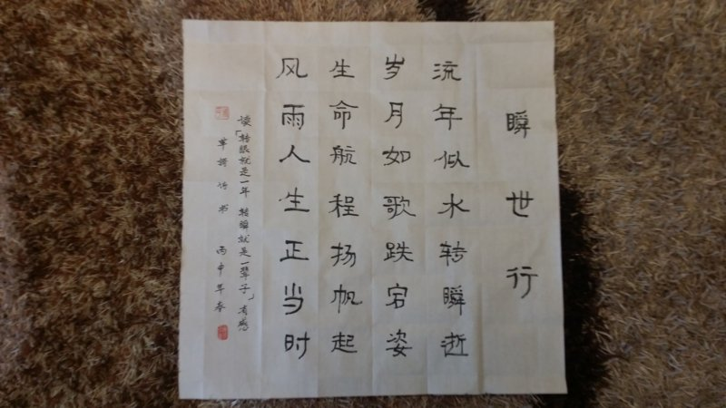
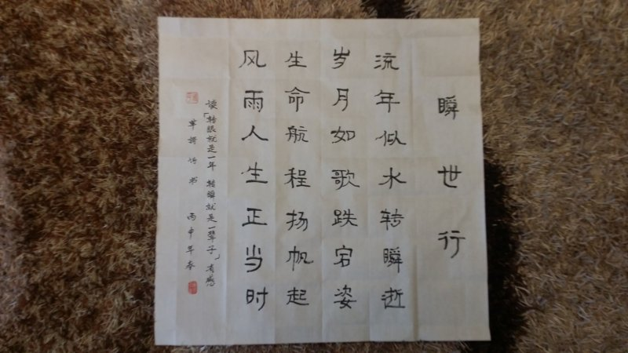

瞬世行
2015-11-03
流年似水转瞬逝，
岁月如歌跌宕姿。
生命航程扬帆起，
风雨人生正当时。
【注释】2015.11.03 读《转眼就是一年,转瞬就是一辈子》。
【赏析】时间远去不堪回首，人的年华像流水一样不断流逝。人的一生岁月， 所经历的许许多多事情，就如一首歌一样：有过灿烂辉煌，欢快愉悦； 也有过低迷时刻，平淡而惆怅......跌宕起伏。但在生命的航程里， 无论是在波峰，还是身处浪谷，都要扬帆远航。当倍加珍惜美好时光， 这正是历经人生风雨的时候啊！

流年似水转瞬逝，
岁月如歌跌宕姿。
生命航程扬帆起，
风雨人生正当时。
【注释】2015.11.03 读《转眼就是一年,转瞬就是一辈子》。
【赏析】时间远去不堪回首，人的年华像流水一样不断流逝。人的一生岁月， 所经历的许许多多事情，就如一首歌一样：有过灿烂辉煌，欢快愉悦； 也有过低迷时刻，平淡而惆怅......跌宕起伏。但在生命的航程里， 无论是在波峰，还是身处浪谷，都要扬帆远航。当倍加珍惜美好时光， 这正是历经人生风雨的时候啊！
